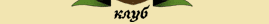
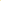

|  |
|  | |||
Вопросы - ответы |
|||
>> Содержание / Склонности 5.1 Что это за значки около имен некоторых людей?Ответ: Эти значки означают, что данный боец принадлежит к одному из братств.5.2 Какие бываю склонности?Ответ:5.3 Как получить какую либо склонность?Ответ: Для того, что бы стать на путь света надо либо заплатить 10000 кредитов, либо сообщить паладинам о своем желании, вершить добрые дела, помогать новичкам, вести разъяснительную работу в форумах... и покорно ждать - братство само выберет вас.Для того, что бы стать темным надо либо внести скромное капиталовложение в храм (пока что не доступно) или вступить в один из существующих кланов (как именно, у каждого клана свои правила). Легче всего получить хаос - для этого всего лишь надо нарушить законы Клуба. Устав нейтралов пока точно не разработан. Выбор склонности доступен с первого уровня. 5.4 Что мне дает получение склонности?Ответ: вообще склонность это ваше мировоззрение. Так что, если вы пытаетесь получить ее только ради корыстных целей (способностей, предметов и т.п.), то вы можете быть очень быстро оттуда изгнаны!5.5 Можно ли как-то потом поменять склонность?Ответ: Да, но это может вызвать большие затруднения, точные правила перемены склонности еще не определены. Исключением является хаос - из него можно выйти, только совершив определенную полезную работу для проекта.5.6 Что такое вампиризм и как от него защищаться?Ответ: Вампиризм - это особое умение членов Темного братства. При этом, у жертвы выпивается вся энергия, а у вампира она восстанавливается. НО вампиры могут нападать только ночью (после 22:00 по серверу). На данный момент единственная защита от вампиров - чеснок. Он дает защиту от вампиров и продается в разделе заклинания.5.7 Что такое заклинания молчания, хаоса и смерти и за что их могут повесить?Ответ: эти заклинания, как средства наказания, доступны только паладинам. Заклинание молчания запрещает человеку пользоваться чатом на протяжении некоторого времени. Его могут повесить за флуд или мат в чате. Заклинание хаоса отправляет человека в хаос. Его могут повесить за тяжкие нарушения (создание 2-х и больше аккаунтов, попытку взлома, постоянное нарушение законов чата). Заклинание смерти моментально убивает аккаунт. Его используют только в САМЫХ тяжких случаях и при мультинге. |
|||
|
| |||